Signature
山寶しょうゆラーメン
東京で修業して持ち帰った、すっきり醤油の一杯。お店の看板です。
東京風ラーメンと、お好み焼きの店。
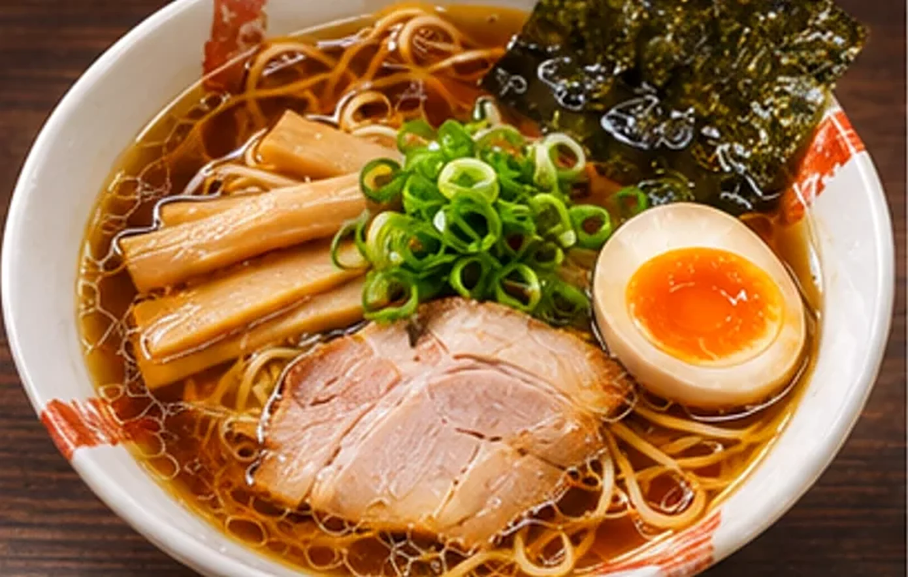
人気 No.1山寶しょうゆラーメン
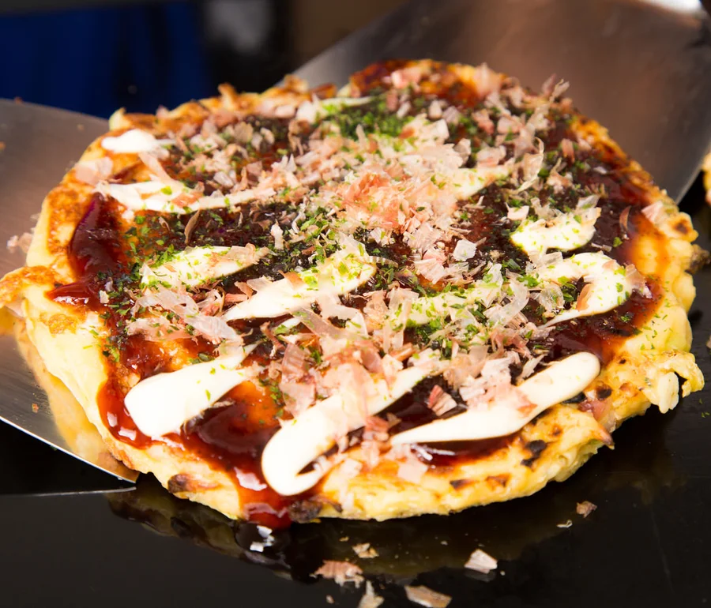
東京で学んだ醤油の一杯と、
延岡駅前から焼き続けてきたお好み焼き。
ひとつの店で、その両方を。
— 東京風 山寶ラーメン 店主
Ramen Lineup
Signature
東京で修業して持ち帰った、すっきり醤油の一杯。お店の看板です。
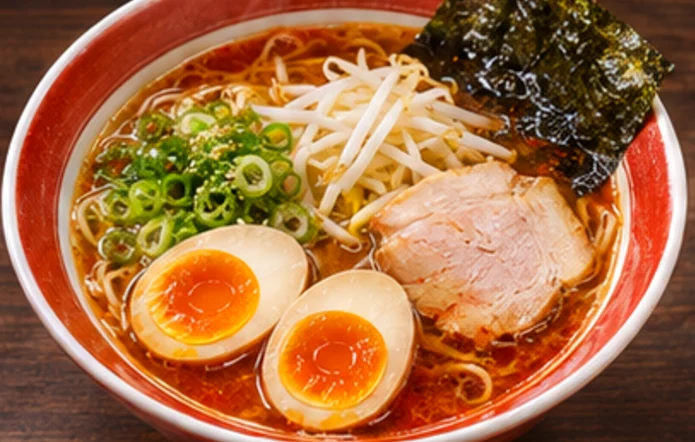
辛い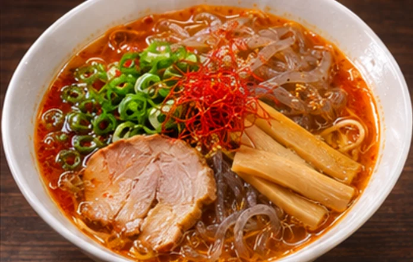
辛い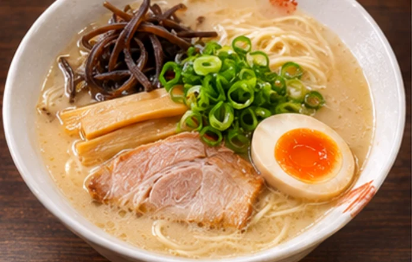
こってり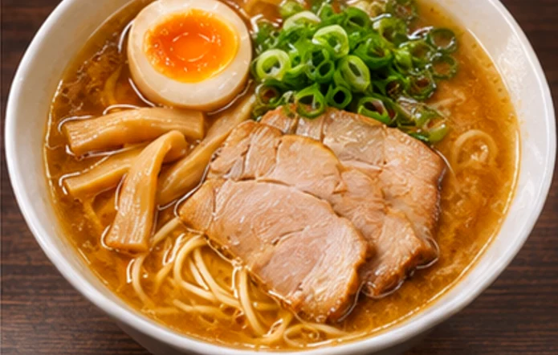
こってり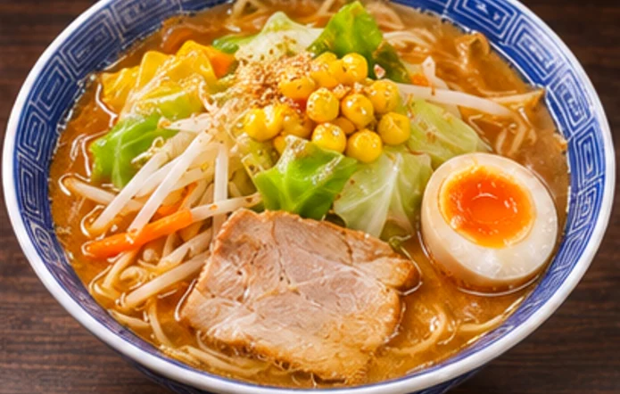
野菜たっぷり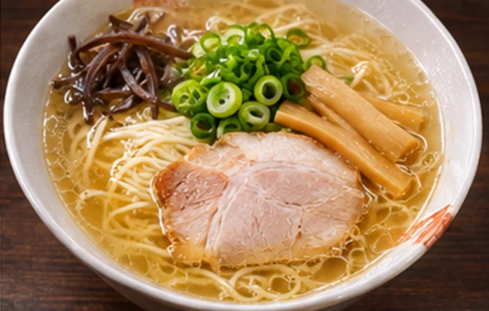
あっさり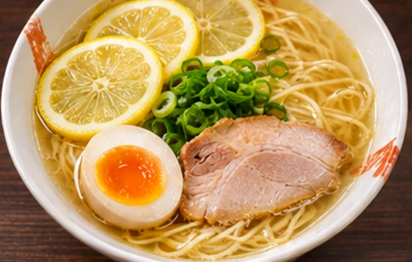
あっさりSet Menu
セットなら800円から。餃子もチャーハンも、ちょうどいい量で。
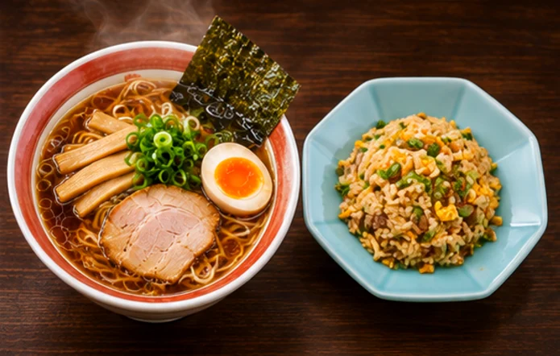
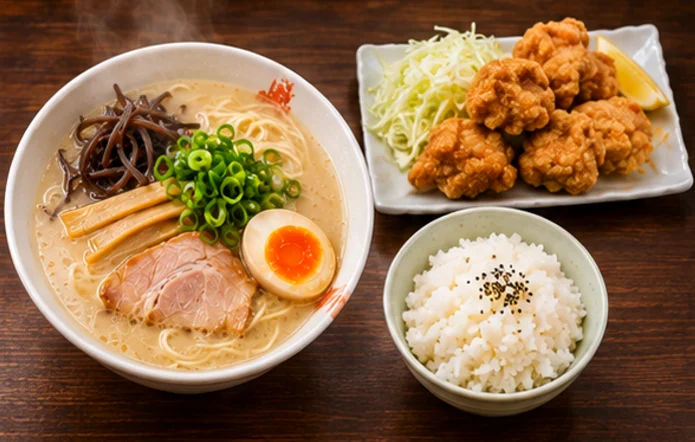
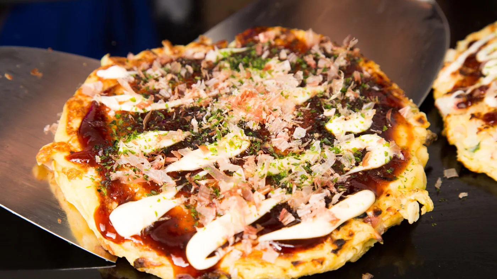
※写真はイメージですOnly at Night
延岡駅前で始めた、店の原点。ブタ玉・ミックス・もだん焼きなど15種類を、水・木・金・土曜の夜の部だけ焼いています。お持ち帰りもできます。
夜 18:00〜20:00 L.O.（水〜土）
お好み焼きのメニューを見るStory
フィリピンから日本に来て約40年。夫を亡くしたあとも、歌って、踊って、6人の子を育て上げたママ。50代で東京のラーメン屋に修業に入り、その味を延岡へ持ち帰りました。
ものがたりを読むOn SNS
りょーやんさんの動画に、
ひみつのお得情報が…！
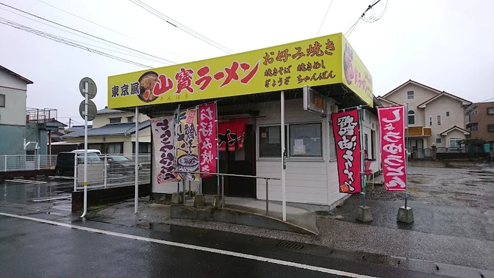
Visit
MENU
ラーメンは650円から。セット、おつまみ、お酒もそろっています。
お持ち帰りできます！
 山寶しょうゆラーメン人気
山寶しょうゆラーメン人気 山寶ラーメン こんにゃくピリ辛
山寶ラーメン こんにゃくピリ辛 とんこつラーメン
とんこつラーメン しおラーメン
しおラーメン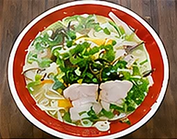
やさいラーメン夜の部（水〜土）限定・お持ち帰りできます
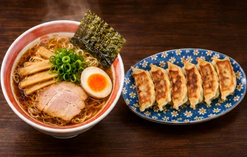
ラーメン＆餃子セット（6個）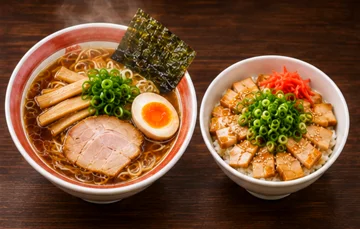
山寶ラーメン＆チャーシュー丼セット ラーメン＆チャーシュー丼セット（大）
ラーメン＆チャーシュー丼セット（大） とんこつラーメン＆唐揚げセット（4個）
とんこつラーメン＆唐揚げセット（4個） チャーシュー丼スープ付き
チャーシュー丼スープ付き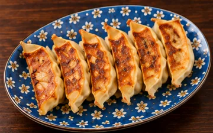
餃子（7個） 唐揚げ
唐揚げ なんこつ
なんこつ 枝豆
枝豆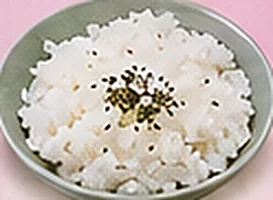
ライス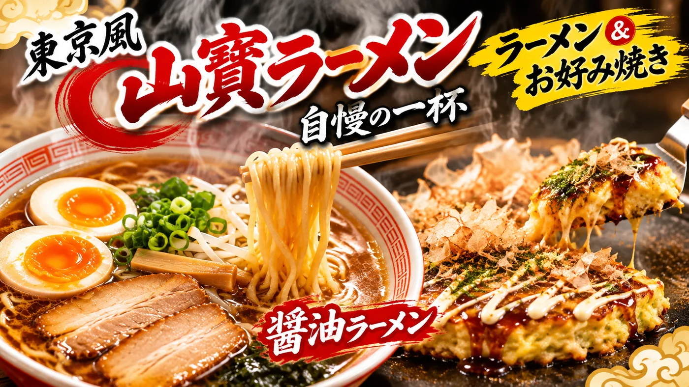
はじまりは延岡駅前のお好み焼き屋さん。だから山寶では、ラーメンと鉄板のお好み焼きを、いっしょに楽しめます。お好み焼きは夜の部（水〜土）限定です。
STORY
店主はフィリピン出身。子どもたちがまだ小さいころに夫に先立たれ、日本にぽつんと残されました。孤独と忙しさに追われながら、6人の子どもをひとりで育て上げてきました。
それでも明るさは消えませんでした。歌って、踊って、おいしいものを食べ歩く。日本に来て約40年、日本語はいまもカタコトまじり。でもその笑顔に会いに、今日もお客さんがやってきます。
ガッツリさんも、子連れのママも、
車椅子の方も、学生さんも。だれでも来てね。
お店の雰囲気は、動画がいちばん伝わります。
ひみつのミッション
宮崎のTikToker・りょーやんさんが、2本の動画で山寶を紹介してくれました。動画のどこかにひみつのお得情報がかくれています。見つけたら、注文のときにお店でこっそり教えてね。
見つけた人だけの、お楽しみです。
黄色い看板をくぐると、にぎやかなテーブルが待っています。


GUIDE
はじめてでも、家族連れでも、海外の方でも。安心して来られるお店です。
車椅子やベビーカーでも入りやすい入口です。
家族の食事や、仲間との集まりにも。
お店の前に停められます。
ジュースやアイスのサービスがあります。
日本語・English・Tagalog で注文できます。
おうちでも、山寶の味を楽しめます。
はい、お店の前に5〜8台ほど停められます。
大歓迎です。個室もあり、お子さまにはジュースやアイスのサービスもあります。
入口はスロープになっているので、車椅子やベビーカーでも入りやすいです。
Yes! English and Tagalog are OK. 英語・タガログ語で対応できます。
お好み焼きは、夜の部（水・木・金・土 18:00〜）限定のメニューです。
お好み焼き・鉄板料理、セットメニュー、餃子・唐揚げ・枝豆などのおつまみもあります。ハイボールやレモンサワー、焼酎などお酒もそろっています。
はい、お持ち帰りできます。おみやげラーメンもあるので、お店でお声がけください。
ACCESS
延岡市昭和町。黄色い看板と、赤い「ラーメン」ののぼりが目印です。
この看板が見えたら到着です。